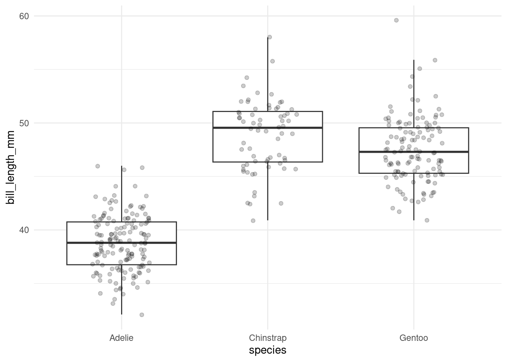
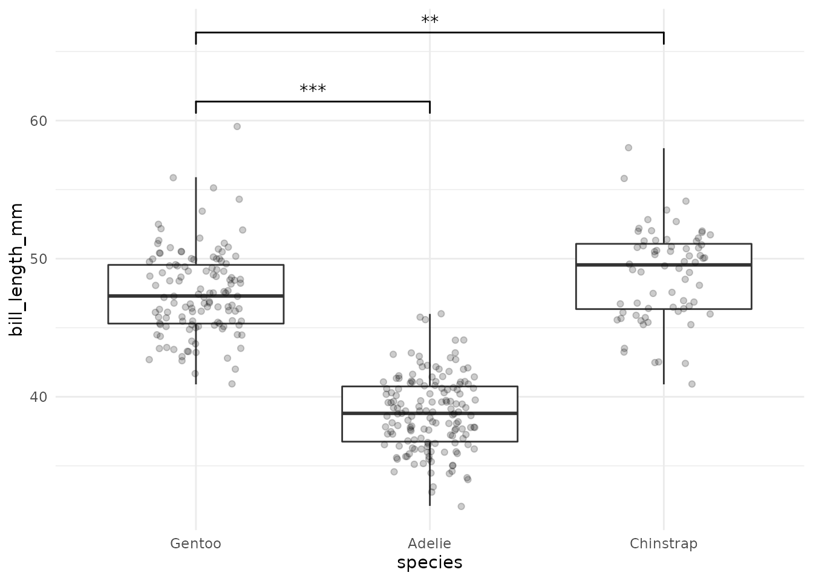
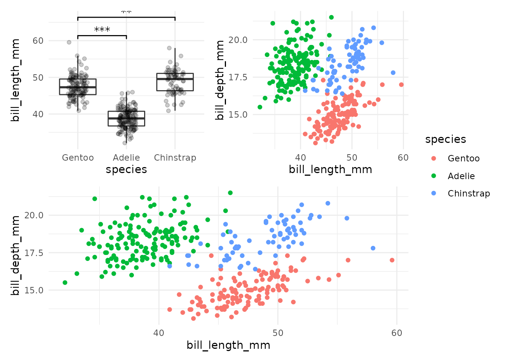
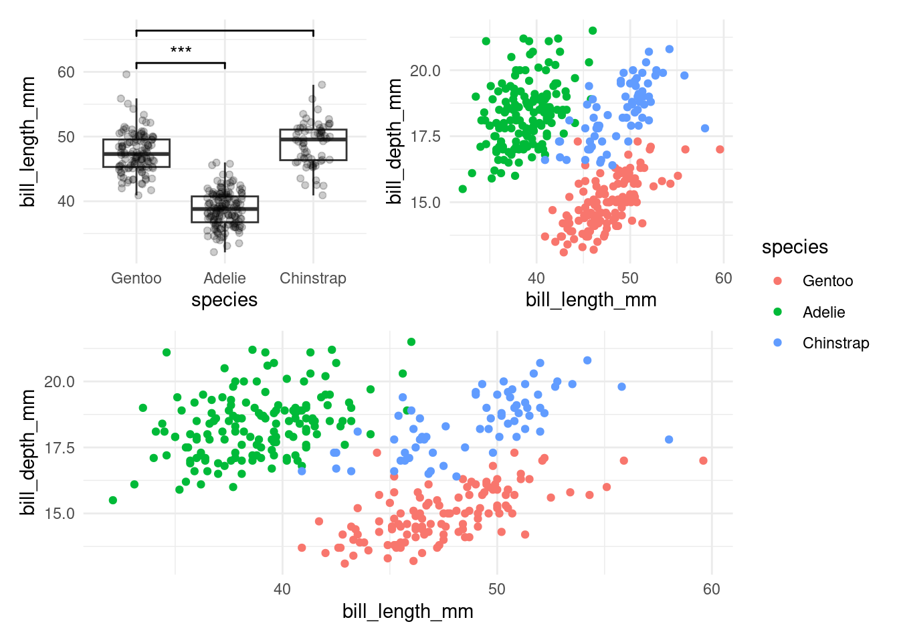
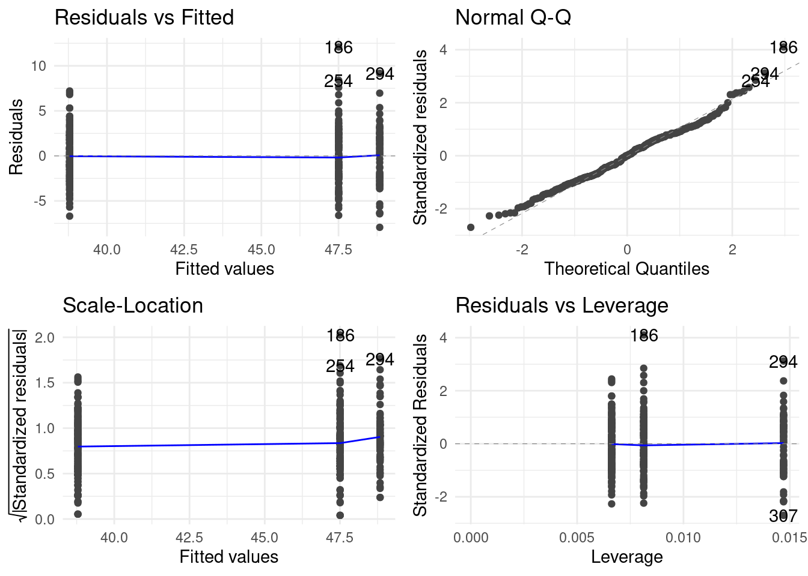

library(multcomp)
library(patchwork)
library(gganimate)
library(palmerpenguins)
library(broom)
library(tidyverse)8 Freestyle
… in which we learn about ANOVA, explore ggplot extensions and build and interactive web application with Shiny.
8.1 Setup
Today we are using quite a bunch of packages. In the lecture these are of course introduced one by one, but because it is a good habit to have all your imports and dependencies near the top of your analysis they show up here already.
8.2 ANOVA
Let’s get started. ANOVA stands for Analysis of Variance. We start with our familiar penguins dataset and ask the question: “Is there a difference in bill length between the species?”
penguins %>%
ggplot(aes(species, bill_length_mm)) +
geom_boxplot(outlier.color = NA) +
geom_jitter(alpha = 0.2, width = 0.2)
Optically, it certainly looks like it. We could run a bunch of t-tests to compare between the groups, which would be 3 in total (Adelie–Chinstrap, Adelie–Gentoo, Gentoo–Chinstrap). And then we would have to correct for multiple testing. At this point, only running one of tests (like Adelie vs. Chinstrap) because it looks so promising is not an option! Looking at the data visually is a form of comparison, so we would be cheating if we formed our hypothesis only after looking at the data.
ANOVA is a way of comparing multiple groups and tells us, if there is a difference at all between the groups. It does not however tell us, between which groups the difference exists, just that there is an overall difference. In order to get p-values for direct comparisons between the groups we run a post-hoc (Latin for “after the fact”) on our anova result.
First I am sliding in a little extra code chunk, because later down the line we might want to compare all groups to e.g. a baseline or control group (see the section about Dunnet below) and this baseline is decided to be the first factor-level of the grouping variable. With fct_relevel we can move a lovel to the first (or any other) position.
penguins <- penguins %>%
mutate(species = fct_relevel(species, "Gentoo"))Not we create an anova fit with aov.
anova_fit <- aov(bill_length_mm ~ species, data = penguins)
anova_fitCall:
aov(formula = bill_length_mm ~ species, data = penguins)
Terms:
species Residuals
Sum of Squares 7194.317 2969.888
Deg. of Freedom 2 339
Residual standard error: 2.959853
Estimated effects may be unbalanced
2 observations deleted due to missingnessAnd explore if further with various functions.
summary(anova_fit) Df Sum Sq Mean Sq F value Pr(>F)
species 2 7194 3597 410.6 <2e-16 ***
Residuals 339 2970 9
---
Signif. codes: 0 '***' 0.001 '**' 0.01 '*' 0.05 '.' 0.1 ' ' 1
2 observations deleted due to missingnesstidy(anova_fit)# A tibble: 2 × 6
term df sumsq meansq statistic p.value
<chr> <dbl> <dbl> <dbl> <dbl> <dbl>
1 species 2 7194. 3597. 411. 2.69e-91
2 Residuals 339 2970. 8.76 NA NA 8.2.1 Tukey Post-Hoc Test
The most straighforward post-hoc test, which is already built into R, is “Tukey’s Honest Significant Differences”, which compares all groups with all other groups.
TukeyHSD(anova_fit) %>%
tidy()# A tibble: 3 × 7
term contrast null.value estimate conf.low conf.high adj.p.value
<chr> <chr> <dbl> <dbl> <dbl> <dbl> <dbl>
1 species Adelie-Gentoo 0 -8.71 -9.56 -7.87 0
2 species Chinstrap-Gentoo 0 1.33 0.276 2.38 0.00890
3 species Chinstrap-Adelie 0 10.0 9.02 11.1 0 8.2.2 Dunnet Post-Hoc Test
If we have a control group we use Dunnet’s test to compare all other groups to the control group. This means we have to do less comparisons and end up with a higher statistical power.
Unfortunately, Dunnet is not built into R, but we can get the necessary functions from the multcomp package. When loading the multcomp package we have to be careful to load it before the tidyverse! Because multcomp also loads a bunch of other packages and one of them brings it’s own select function, so loading it after the tidyverse would overwrite tidyverse select and make our life very hard.
glht(anova_fit, mcp(species = "Dunnet")) %>%
tidy()# A tibble: 2 × 7
term contrast null.value estimate std.error statistic adj.p.value
<chr> <chr> <dbl> <dbl> <dbl> <dbl> <dbl>
1 species Adelie - Gentoo 0 -8.71 0.360 -24.2 -4.44e-16
2 species Chinstrap - Gentoo 0 1.33 0.447 2.97 6.20e- 3Note, that this package can also do Tukey’s test by changing “Dunnet” to “Tukey”.
8.3 ggplot extensions
In order to plot these nice significance stars on top of of our comparisons let me first introduce you to ggplot extensions:
https://exts.ggplot2.tidyverse.org/
This is just a collection of packages that extend ggplot in some shape or form or simply work very well with it.
8.3.1 ggsignif, ggpubr
One of these is ggsignif, which we can use to add comparison brackets to our plot.
penguins %>%
ggplot(aes(species, bill_length_mm)) +
geom_boxplot(outlier.color = NA) +
geom_jitter(alpha = 0.2, width = 0.2) +
ggsignif::geom_signif(
comparisons = list(c("Gentoo", "Adelie")),
annotations = c("hello")
)
ggsignif can also run it’s own comparisons, which is a wilcoxon rank sum test by default, but especially for statistical tests I prefer to run them myself first before trusting more packages. Additionally, we have of course a different type of test (ANOVA), and we already have our values, so we use it just to manually add text to the annotation:
stars <- function(p) {
case_when(
p <= 0.001 ~ "***",
p <= 0.01 ~ "**",
p <= 0.05 ~ "*",
TRUE ~ "ns"
)
}
dunnet <- glht(anova_fit, mcp(species = "Dunnet")) %>%
tidy() %>%
mutate(contrast = str_split(contrast, " - "),
stars = stars(adj.p.value))
plt <- penguins %>%
ggplot(aes(species, bill_length_mm)) +
geom_boxplot(outlier.color = NA) +
geom_jitter(alpha = 0.2, width = 0.2) +
ggsignif::geom_signif(
comparisons = dunnet$contrast,
annotations = dunnet$stars,
y_position = c(60, 65)
)
plt
8.3.2 patchwork
I also saved the plot to a variable and will now create a second one just to show you the patchwork package, which can combine plots into neat layouts:
plt2 <- ggplot(penguins, aes(bill_length_mm, bill_depth_mm, color = species)) +
geom_point()
((plt | plt2) / plt2 ) + plot_layout(guides = 'collect')
8.3.3 ggfortify
ggfortiy might not strictly be necessary but I want to mention it to talk about autoplot. autoplot is in ggplot2 already by default. It creates automatic plot for certain objects, like models for example, or an anova result. ggfortify makes more objects have the ability to generate an autoplot.
library(ggfortify)
autoplot(anova_fit)
I want to mention this here because it has an important implication for communication. There are two purposes too plots. The first purpose is to generate insight for you, the data analyst. Autoplots are often very helpful for this. But the second purpose is to communicate your findings to a reader! It takes time and effort to refine a plot from something that generated and insight for you after having spent a lot of time with your data to also generating insights for a reader that sees the data for the first time. Too many people stop at the first step and publish their plots as is, without thinking much about the reader. Keep this in mind as you advance in your scientific career.
Communication is key! Both code and plots are means of communicating.
8.3.4 esquisse
Two more cool packages: The esquisse package let’s you create ggplots interactively with a gui! But make sure to always save the code this created to ensure reproducibility!
8.3.5 gganimate
And gganimate extends ggplot with the ability to use time as a dimension:
gapminder::gapminder %>%
ggplot(aes(gdpPercap, lifeExp, size = pop, color = country)) +
geom_point() +
scale_x_log10() +
transition_time(year) +
scale_color_manual(values = gapminder::country_colors) +
guides(color = "none",
size = "none")NULL8.4 Build Apps with shiny
You can find the code written during the lecture in: example-app/.
8.5 Exercises
8.5.1 The Whole Deal
Data analysis takes practice. For this last exercise you get the option to show what you have learned on a fresh dataset. But people have different interests, so I am leaving the choice open.
Choose a dataset from the TidyTuesday project:
https://github.com/rfordatascience/tidytuesday#datasets
and write your data analysis report. Aim to write down some questions you have about the topic and answer them with the available data. Explore it with plots and tables and try to end up with 1 or 2 high quality plots that clearly communicate you findings. Above all, have fun!
8.6 Feedback
I will send round a link for a feedback form. It is anonymous.